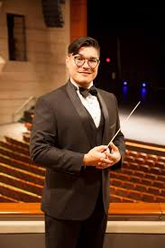
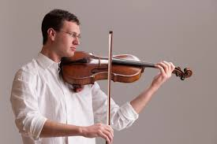

Traveling Troubadours Music Festival
We bring the music festival to you
The Traveling Troubadours Music Festival aims to celebrate and enhance a rich musical heritage by creating a platform for classical music performances, educational exchanges, and cultural collaboration around the world. Most recently, The Troubadors were in Cusco, Peru working with the Orquesta Sinfónica de Cusco, fostering a vibrant musical community and providing opportunities for musicians to develop their talents and perform.
El Festival de Música Trovadores Itinerantes tiene como objetivo celebrar y realzar un rico patrimonio musical creando una plataforma para presentaciones de música clásica, intercambios educativos y colaboración cultural en todo el mundo. Recientemente, los Trovadores estuvieron en Cusco, Perú, trabajando con la Orquesta Sinfónica de Cusco, fomentando una vibrante comunidad musical y proporcionando oportunidades para que los músicos desarrollen sus talentos y se presenten.
Our Maestros

Jean Gomez es conocido por su energía y pasión como director y intérprete, así como por su dedicación a la educación musical. Desde sus primeros pasos en la Escuela Municipal de Música de Paraíso y el Sistema Nacional de Educación Musical en su natal Costa Rica, desarrolló un interés por aprender diferentes instrumentos, tocar en varios conjuntos y dar clases particulares.
Jean Gomez is known for his energy and passion as a conductor and performer and his devotion to music education. From his early steps at the Escuela Municipal de Música de Paraíso and the Sistema Nacional de Educación Musical in his native Costa Rica, he developed an interest in learning different instruments, playing in various ensembles, and teaching private lessons.

Conrad Sclar is a poetic and passionate violist known for his meticulous approach: from his love of opera to his enthusiasm for chamber music Dr. Sclar loves every facet of music.
Conrad Sclar es un violista poético y apasionado, conocido por su enfoque meticuloso: desde su amor por la ópera hasta su entusiasmo por la música de cámara, el Dr. Sclar ama cada faceta de la música.